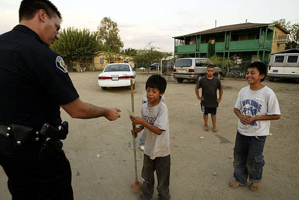

Police and Neighborhood Safety
Responding to emergency and non-emergency calls, patrols, investigations, traffic safety, crime prevention and maintaining public order.
Spanish translation is being prepared by the City and will be published here. The full site will be available in both languages before the election.
November 3, 2026 General Municipal Election
On November 3, 2026, City of Arvin voters will vote on a proposed one-percent local transactions and use tax, commonly called a local sales tax. If approved, the measure would add one cent to each taxable dollar spent in Arvin and is estimated to generate approximately $2.35 million annually for general City services.
The ballot question states the Measure, if approved, would fund general city services, such as local police and fire protection, 911 emergency response, street and road repairs, parks, youth and senior services, and other general city services. All revenue generated by the measure would remain under local control. The measure also requires independent audits and public disclosure of revenue and expenditures.
This webpage provides factual, impartial information about a measure appearing on the November 3, 2026 ballot. It is not intended to advocate for or against the measure. The official ballot materials and ordinance control if any wording differs from this summary.
The City Council has placed the measure before Arvin voters as part of the November 3, 2026 General Municipal Election. Voters — not the City Council — will make the final decision.
Adds one cent to every taxable dollar in transactions subject to the measure.
Actual revenue could be higher or lower depending on taxable sales and economic conditions.
Revenue would belong to the City of Arvin and be available for local municipal purposes.
If approved, the measure would remain in effect until ended by Arvin voters.
Arvin provides services residents, families and businesses use every day. These include police response, fire protection, emergency preparedness, streets, parks, public facilities and other basic municipal operations.
The cost of providing those services has increased. Public-safety personnel, insurance, fuel, vehicles, equipment, technology, maintenance and basic operating supplies all cost more than they did only a few years ago. As those costs rise, each available City dollar pays for less.
The City has worked to control expenses, pursue grants and use available funding carefully. Grants can help complete important projects, but they are often temporary, restricted to specific purposes or unavailable for ongoing daily operations.
The City Council placed the measure on the ballot to allow Arvin voters to decide whether the City should establish an additional, locally controlled source of general revenue.
Source: City of Arvin adopted annual budget. [LINK PENDING — adopted budget page or PDF]
The question before voters is whether Arvin should establish an additional source of locally controlled revenue for City services.
Because the proposal is a general tax, the revenue would be deposited into the City's General Fund and could be used for any legitimate general municipal purposes. The ballot question identifies the following examples of service areas.

Responding to emergency and non-emergency calls, patrols, investigations, traffic safety, crime prevention and maintaining public order.
The City contracts with Kern County for fire protection. Additional funding would support maintaining that agreement.
Depends on trained personnel, reliable communications, functioning equipment and sufficient resources.
Street maintenance, repairs, signs, markings, traffic safety and other transportation needs.
Parks, recreation spaces, City buildings, grounds and public areas.
The ballot question identifies youth and senior services among the general services the measure could support.
Approval of the measure would not guarantee a specific amount for any individual service or department. Annual funding decisions would continue to be made through the City's public budgeting process.
The City adopts an annual budget identifying expected revenues, expenses and service priorities.
Arvin's adopted 2026–27 budget includes approximately $2.35 million in local sales-tax revenue in the General Fund. The budget identifies police services, the Kern County fire contract, and parks, buildings and grounds among the services supported by that amount.
Police services alone represent a substantial General Fund responsibility. The proposed budget identifies approximately $3.78 million for the Police Department.
These figures help show the scale of local service costs and the role locally generated revenue plays in the City budget.
General Fund expenditures by category
Adopted 2026–27 budget. Figures shown in dollars.
Fiscal year 2026–27 · Source: City of Arvin adopted annual budget. [PENDING — Police is still the proposed-budget figure; the City must supply the final adopted Police figure before launch.]
| Category | Adopted 2026–27 amount |
|---|---|
| Police | $3.78 million |
| Fire contract (Kern County) | $1,148,836 |
| Parks, buildings and grounds | $709,481 |
| Administration and finance | $2,431,096 |
| Public works | $70,519 |
| Other essential services | $902,511 |
The proposed 2026 measure is a new one-percent transactions and use tax. It should not be confused with any existing tax or revenue source.
View the Adopted City Budget [URL PENDING]
If the measure is not approved, the proposed one-percent tax would not take effect, and the City would not receive the estimated $2.35 million in annual measure revenue.
The City would continue operating with the funding legally available to it.
Depending on future revenues, expenses and service demands, the City's options could include reducing expenditures, using available reserves, deferring maintenance or equipment replacement, delaying projects, changing service levels, or pursuing additional grants.
No specific future reduction is automatically required by a "no" vote. Any proposed budget reductions, service changes or use of reserves would be evaluated through the City's normal public budget process.
A "no" vote would prevent the proposed tax from taking effect. It would not eliminate an existing Arvin tax.
A one-percent transactions and use tax means one additional cent for each taxable dollar.
| Purchase | Additional amount |
|---|---|
| $10 | 10 cents |
| $25 | 25 cents |
| $50 | 50 cents |
| $100 | $1 |
The measure would generally follow California sales and use tax rules. Not every purchase is taxable. Most groceries purchased for home consumption and prescription medicines are generally exempt from California sales tax.
The measure would not be a property tax, an income tax, a tax on wages, or a tax on rent. The measure would not change local property-tax rates.
Prepared food, hot meals and certain other purchases may remain taxable under State law. Questions about whether a particular product or transaction is taxable should be directed to the California Department of Tax and Fee Administration.
Anyone making a taxable purchase legally sourced to Arvin could pay the proposed tax. This could include Arvin residents, visitors, commuters, customers who live outside the City, and some purchasers receiving taxable goods delivered to an Arvin address.
The application of sales and use taxes to online transactions depends on State sourcing rules, the type of transaction and the delivery location.
Businesses do not keep the tax as business revenue. Retailers collect applicable sales and use taxes and submit them through the State-administered system.
If the measure is approved, the California Department of Tax and Fee Administration would administer the tax. Before the operative date, the City should provide businesses with:
The ballot question states that all measure funds would stay local. Revenue generated by the measure would be City of Arvin revenue available for lawful local municipal purposes. The California Department of Tax and Fee Administration would collect and administer the tax and allocate the applicable revenue to the City, subject to State law and administrative costs.
The ordinance requires an independent annual audit addressing the revenue received from the measure, the expenditures made using measure revenue, and the City's accounting for those funds. The audit must be presented annually to the City Council and made available for public review.
City budgets, expenditures and financial reports would also continue to be considered through public processes.
The adopted ballot question and ordinance require independent audits and public disclosure. The ordinance does not expressly establish a citizens' oversight committee. The City Council could separately establish additional oversight or reporting procedures.
Documents will be posted here as they become available.
[THREE URLS PENDING — City budgets page, financial reports page, Council meeting video page.]
The following question has been submitted for the November 3, 2026 election. The final wording printed in the official ballot and voter information guide controls.
To protect funding for the City of Arvin's local public safety, police and fire departments, 911 emergency response, street and road repairs, parks, youth and senior services, and other general city services, shall the measure establishing a 1% transactions and use tax in the City of Arvin, providing approximately $2,350,000 annually, until ended by voters, with all funds staying local, independent audits, and public disclosure, be adopted?
Because the proposal is a general tax, it requires approval by a majority of votes cast on the measure — 50 percent plus one vote.
Read the full ordinance and official documents [PENDING — accessible HTML or tagged PDF, with file size labelled.]
Search the questions below, or scroll through all of them.
31 questions
It is a proposal to establish a one-percent transactions and use tax in the City of Arvin. A transactions and use tax is commonly called a local sales tax. If approved, it would add one cent to each taxable dollar in transactions subject to the measure.
The measure will appear on the Tuesday, November 3, 2026 General Municipal Election ballot, consolidated with the statewide general election.
Registered voters residing within the City of Arvin will decide whether to approve or reject the measure.
The measure requires approval by a majority of votes cast on the proposal — 50 percent plus one vote.
Approximately $2.35 million annually. The amount is an estimate; actual revenue would depend on taxable sales and economic conditions.
Because the measure is a general tax, revenue would be available for legitimate general City purposes such as police and fire services, 911 emergency response, street and road repairs, parks, youth and senior services, and other general City services. Annual spending decisions would be made through the City's public budget process.
No specific percentage is legally dedicated to an individual department or program. Annual allocations would be considered through the City's public budget process.
One additional cent on each taxable dollar — for example, 10 cents on a $10 purchase, 50 cents on $50, and $1 on $100.
Most groceries purchased for home consumption are generally exempt from California sales tax. Prepared meals, hot food and some other food purchases may be taxable under State rules.
Prescription medicines are generally exempt from California sales tax.
No. It is not a tax on residential rent.
No. It is not a property tax and would not change property-tax rates.
No. It is not an income tax and does not tax wages.
Yes. Visitors making taxable purchases sourced to Arvin could pay the measure, just as residents could.
Some taxable online transactions delivered to an Arvin address may be subject to the measure under California sourcing rules. Treatment depends on State law; questions should be confirmed with the California Department of Tax and Fee Administration.
No. Businesses collect applicable sales and use taxes and submit them through the State-administered system.
Yes. It would be City of Arvin revenue for local municipal purposes. The California Department of Tax and Fee Administration administers collection and allocation, subject to administrative charges and applicable law.
No. The measure is structured to generate locally controlled City revenue, not State General Fund revenue.
An independent annual audit accounting for measure revenue and expenditures, presented annually to the City Council and made available for public review.
The measure requires independent audits and public disclosure, but the ordinance does not expressly establish a citizens' oversight committee. The City Council could separately consider additional oversight procedures.
There is no automatic expiration date. If approved, it continues until ended by Arvin voters.
No. Any future rate increase would remain subject to California's voter-approval requirements.
Costs have increased for public safety, insurance, fuel, vehicles, technology, maintenance and other general City services. The Council placed the proposal on the ballot so voters could decide on an additional locally controlled revenue source.
Yes, but grants are frequently limited to specific uses, available only for a limited period, or unavailable for ongoing operating expenses.
The one-percent tax takes effect according to the ordinance's operative-date provisions. Revenue is deposited into the General Fund, budgeted through a public process, and subject to independent annual audits and public disclosure.
The proposed tax would not take effect and the City would not receive the estimated measure revenue. The City would evaluate options such as expenditure reductions, use of reserves, deferred projects and maintenance, service-level changes, or additional grants and revenue strategies.
No. The measure proposes a new tax. A "no" vote prevents that new tax and does not repeal any other existing tax.
The operative date is governed by the ordinance and State administrative requirements. The City should post the confirmed date after election certification and coordination with the California Department of Tax and Fee Administration.
The complete ordinance, resolution, ballot question, impartial analysis and other official documents will be posted in the Official Documents section of this page. Printed copies are also available from the City Clerk.
Kern County Elections provides voter registration, vote-by-mail, ballot return options, vote centers and deadline information.
City of Arvin, Office of the City Clerk, 200 Campus Drive, Arvin, California 93203. Phone: [PHONE NUMBER PENDING]. Email: [MEASURE-INFORMATION EMAIL PENDING].
Questions about whether a particular product or transaction is taxable should be directed to the California Department of Tax and Fee Administration.
No questions match that search. Try a different word, such as groceries, rent, audit or roads.